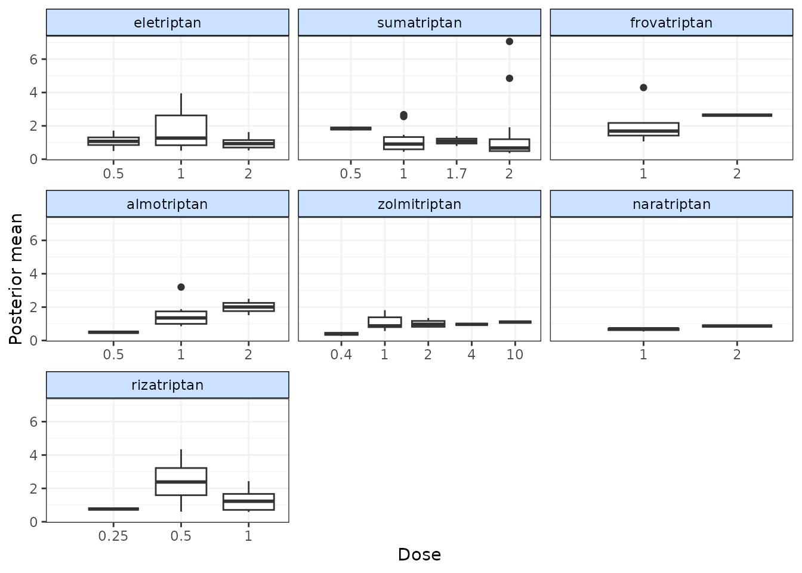
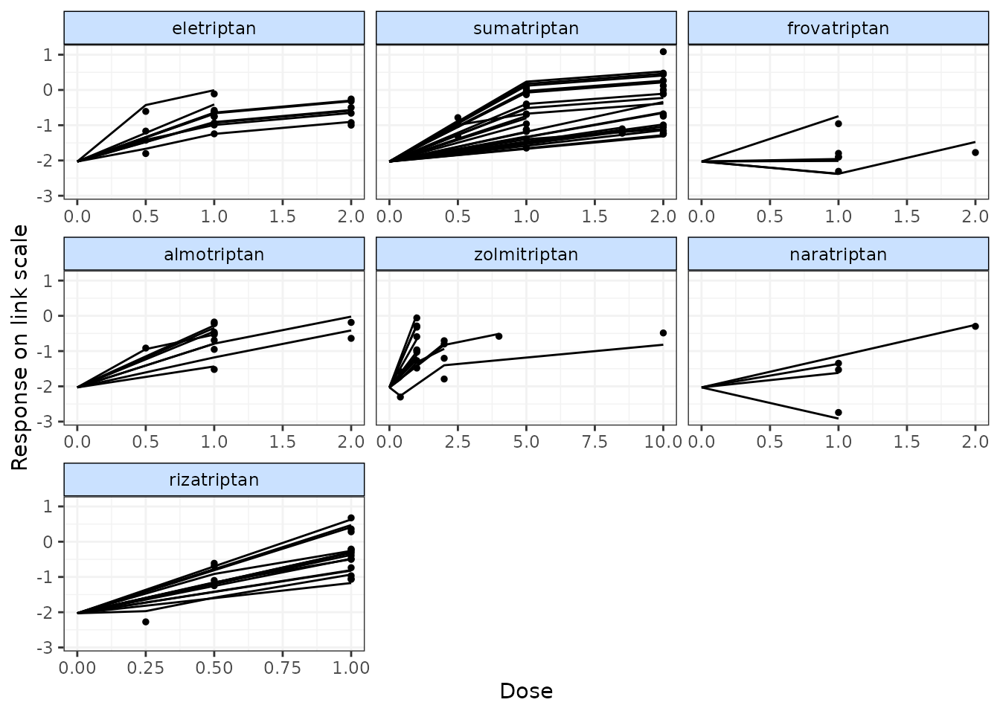

MBNMAdose: Perform a Model-Based Network Meta-Analysis (MBNMA)
Hugo Pedder
2024-04-18
runmbnmadose-2.RmdAnalysis using mbnma.run()
MBNMA is performed in MBNMAdose by applying
mbnma.run(). A "mbnma.network" object must be
provided as the data for mbnma.run(). The key arguments
within mbnma.run() involve specifying the functional form
used to model the dose-response, and the dose-response parameters that
comprise that functional form.
Dose-response functions
Various functional forms are implemented within
MBNMAdose, that allow a variety of parameterizations and
dose-response shapes. These are provided as an object of class
"dosefun" to the fun argument in
mbnma.run(). The interpretation of the dose-response
parameter estimates will therefore depend on the dose-response function
used. In previous versions of MBNMAdose (prior to version
0.4.0), wrapper functions were provided for each of the commonly used
dose-response functions in mbnma.run(). For example,
mbnma.emax() is equivalent to
mbnma.run(fun=demax()). This will be deprecated in future
versions.
For the following functions \(x_{i,k}\) refers to the dose and \(t_{i,k}\) to the agent in arm \(k\) of study \(i\).
Log-linear (dloglin()) \[f(x_{i,k}, t_{i,k})=\lambda_{t_{i,k}} \times
ln(x_{i,k} + 1)\] where \(lambda\) controls the gradient of the
dose-response relationship.
Exponential (dexp()) \[f(x_{i,k}, t_{i,k})=Emax_{t_{i,k}} (1 -
e^{-x_{i,k}})\] where \(Emax\)
is the maximum efficacy of an agent.
Emax (demax()) \[f(x_{i,k}, t_{i,k})=\dfrac{Emax_{t_{i,k}} \times
{x_{i,k}^{\gamma_{t_{i,k}}}}} {ED50_{t_{i,k}}^{\gamma_{t_{i,k}}} +
x_{i,k}^{\gamma_{t_{i,k}}}}\] where \(Emax\) is the maximum efficacy that can be
achieved, \(ED50\) is the dose at which
50% of the maximum efficacy is achieved, and \(\gamma\) is the Hill parameter that
controls the sigmoidal shape of the function. By default,
demax() fits a 2-parameter Emax function in which \(\gamma_{t_{i,k}}=1\)
(hill=NULL in function argument).
Polynomial (e.g. linear) (dpoly())
\[f(x_{i,k},
t_{i,k})=\beta_{1_{t_{i,k}}}x_{i,k}+...+\beta_{p_{t_{i,k}}}x^p_{i,k}\]
where \(p\) is the degree of the
polynomial (e.g. 1 for linear) and \(\beta_p\) are the coefficients
Fractional polynomial (dfpoly()) \[f(x_{i,k},
t_{i,k})=\beta_{1_{t_{i,k}}}x_{i,k}^{\gamma_1}+...+\beta_{p_{t_{i,k}}}x^{\gamma_p}_{i,k}\]
where \(p\) is the degree of the
polynomial, \(\beta_p\) are the
coefficients, and \(x_{i,k}^{\gamma_p}\) is a regular power
except where \(\gamma_p=0\) where \({x_{i,k}^{(0)}=ln(x_{i,k})}\). If a
fractional polynomial power \({\gamma_p}\) repeats within the function it
is multiplied by another \({ln(x_{i,k})}\).
Spline functions (dspline()) B-splines
(type="bs"), natural cubic splines (type="ns")
and piecewise linear splines (type="ls") can be fitted.
\[f(x_{i,k}, t_{i,k})=\sum_{p=1}^{P}
\beta_{p,t_{i,k}} X_{p,i,k}\] where \(\beta_{p,t_{i,k}}\) is the regression
coefficient for the \(p^{th}\) spline
and \(X_{1:P,i,k}\) is the basis matrix
for the spline, defined by the spline type.
Non-parametric monotonic function
(dnonparam()) Follows the approach of Owen et al.
(2015). The direction can
bespecified as "increasing" or
"decreasing".
User-defined function (duser()) Any
function that can be explicitly defined by the user within (see User-defined dose-response
function)
Agent-specific functions (dmulti())
Allows for a separate dose-response function to be fitted to each agent
in the network (see Agent-specific
dose-response functions)
Dose-response parameters
Dose-response parameters can be specified in different ways which affects the key parameters estimated by the model and implies different modelling assumptions. Three different specifications are available for each parameter:
-
"rel"indicates that relative effects should be pooled for this dose-response parameter separately for each agent in the network. This preserves randomisation within included studies and is likely to vary less between studies (only due to effect modification). -
"common"indicates that a single absolute value for this dose-response parameter should be estimated across the whole network that does not vary by agent. This is particularly useful for parameters expected to be constant (e.g. Hill parameters indemax()or fractional polynomial power parameters infpoly()). -
"random"indicates that a single absolute value should be estimated separately for each agent, but that all the agent values vary randomly around a single mean absolute network effect. It is similar to"common"but makes slightly less strong assumptions. -
numeric()Assigned a numeric value - this is similar to assigning"common", but the single absolute value is assigned as a numeric value by the user, rather than estimated from the data.
In mbnma.run(), an additional argument,
method, indicates what method to use for pooling relative
effects and can take either the values "common", implying
that all studies estimate the same true effect (akin to a “fixed effect”
meta-analysis), or "random", implying that all studies
estimate a separate true effect, but that each of these true effects
vary randomly around a true mean effect. This approach allows for
modelling of between-study heterogeneity.
If relative effects ("rel") are modelled on more than
one dose-response parameter then by default, a correlation will be
assumed between the dose-response parameters, which will typically
improve estimation (provided the parameters are correlated…they usually
are). This can be prevented by setting cor=FALSE.
Output
mbnma.run() returns an object of class
c("rjags", "mbnma"). summary() provides
posterior medians and 95% credible intervals (95%CrI) for different
parameters in the model, naming them by agent and giving some
explanation of the way they have been specified in the model.
print() can also be used to give full summary statistics of
the posterior distributions for monitored nodes in the JAGS model.
Estimates are automatically reported for parameters of interest
depending on the model specification (unless otherwise specified in
parameters.to.save).
Dose-response parameters will be named in the output, with a separate
coefficient for each agent (if specified as "rel"). If
class effects are modelled, parameters for classes are represented by
the upper case name of the dose-response parameter they correspond to
(e.g. EMAX will be the class effects on emax).
The SD of the class effect (e.g. sd.EMAX,
sd.BETA.1) is the SD of agents within a class for the
dose-response parameter they correspond to.
sd corresponds to the between-study SD. However,
sd. followed by a dose-response parameter name
(e.g. sd.emax, sd.beta.1) is the between-agent
SD for dose response parameters modeled using "common" or
"random".
totresdev is the residual deviance, and
deviance the deviance of the model. Model fit statistics
for pD (effective number of parameters) and
DIC (Deviance Information Criterion) are also reported,
with an explanation as to how they have been calculated.
Examples
An example MBNMA of the triptans dataset using an Emax dose-response function and common treatment effects that pool relative effects for each agent separately on both Emax and ED50 parameters follows:
# Prepare data using the triptans dataset
tripnet <- mbnma.network(triptans)
#> Values for `agent` with dose = 0 have been recoded to `Placebo`
#> agent is being recoded to enforce sequential numbering
# Run an Emax dose-response MBNMA
mbnma <- mbnma.run(tripnet, fun = demax(emax = "rel", ed50 = "rel"), method = "random")
#> `likelihood` not given by user - set to `binomial` based on data provided
#> `link` not given by user - set to `logit` based on assigned value for `likelihood`
#> module glm loaded
# Print neat summary of output
summary(mbnma)
#> ========================================
#> Dose-response MBNMA
#> ========================================
#>
#> Likelihood: binomial
#> Link function: logit
#> Dose-response function: emax
#>
#> Pooling method
#>
#> Method: Random effects estimated for relative effects
#>
#> Parameter Median (95%CrI)
#> -----------------------------------------------------------------------
#> Between-study SD for relative effects 0.31 (0.222, 0.408)
#>
#> emax dose-response parameter results
#>
#> Pooling: relative effects for each agent
#>
#> |Agent |Parameter | Median| 2.5%| 97.5%|
#> |:------------|:---------|-------:|------:|--------:|
#> |eletriptan |emax[2] | 2.7468| 2.0855| 3.8224|
#> |sumatriptan |emax[3] | 2.2280| 1.5041| 5.7750|
#> |frovatriptan |emax[4] | 73.8410| 5.3802| 181.5962|
#> |almotriptan |emax[5] | 64.9145| 4.8699| 166.3348|
#> |zolmitriptan |emax[6] | 2.8738| 1.6952| 5.1088|
#> |naratriptan |emax[7] | 44.2414| 6.5802| 120.5205|
#> |rizatriptan |emax[8] | 91.5845| 5.0873| 216.0724|
#>
#>
#> ed50 dose-response parameter results
#>
#> Pooling: relative effects for each agent
#>
#> |Agent |Parameter | Median| 2.5%| 97.5%|
#> |:------------|:---------|-------:|-------:|--------:|
#> |eletriptan |ed50[2] | 0.6479| 0.2599| 1.4542|
#> |sumatriptan |ed50[3] | 1.1245| 0.3205| 5.9756|
#> |frovatriptan |ed50[4] | 77.2307| 3.7741| 195.8473|
#> |almotriptan |ed50[5] | 77.6310| 4.1451| 195.5089|
#> |zolmitriptan |ed50[6] | 1.4850| 0.4132| 4.2453|
#> |naratriptan |ed50[7] | 99.4281| 16.2121| 241.6199|
#> |rizatriptan |ed50[8] | 56.6349| 2.2844| 137.5161|
#>
#>
#> Model Fit Statistics
#> Effective number of parameters:
#> pD calculated using the Kullback-Leibler divergence = 130.5
#>
#> Deviance = 1090.6
#> Residual deviance = 187.5
#> Deviance Information Criterion (DIC) = 1221.1In this example the emax parameters are the maximum
efficacy that can be achieved for each agent. The ed50
parameters are the the dose at which 50% of the maximum efficacy is
achieved for each agent. Results for ED50 are given on the log scale as
it is constrained to be greater than zero. sd corresponds
to the between-study SD (included because
method="random").
Instead of estimating a separate relative effect for each agent, a simpler dose-response model that makes stronger assumptions could estimate a single parameter across the whole network for ED50, but still estimate a separate effect for each agent for Emax:
# Emax model with single parameter estimated for Emax
emax <- mbnma.run(tripnet, fun = demax(emax = "rel", ed50 = "common"), method = "random")
#> `likelihood` not given by user - set to `binomial` based on data provided
#> `link` not given by user - set to `logit` based on assigned value for `likelihood`
summary(emax)
#> Warning in rhat.warning(object): The following parameters have Rhat values > 1.2
#> which could be due to convergence issues:
#> ed50
#> emax[2]
#> emax[3]
#> emax[4]
#> emax[5]
#> emax[6]
#> emax[7]
#> emax[8]
#> sd
#> ========================================
#> Dose-response MBNMA
#> ========================================
#>
#> Likelihood: binomial
#> Link function: logit
#> Dose-response function: emax
#>
#> Pooling method
#>
#> Method: Random effects estimated for relative effects
#>
#> Parameter Median (95%CrI)
#> -----------------------------------------------------------------------
#> Between-study SD for relative effects 0.268 (0.157, 0.616)
#>
#> emax dose-response parameter results
#>
#> Pooling: relative effects for each agent
#>
#> |Agent |Parameter | Median| 2.5%| 97.5%|
#> |:------------|:---------|------:|------:|--------:|
#> |eletriptan |emax[2] | 3.0735| 2.4038| 140.0550|
#> |sumatriptan |emax[3] | 2.0308| 1.6537| 94.8045|
#> |frovatriptan |emax[4] | 2.3785| 1.4961| 139.9150|
#> |almotriptan |emax[5] | 1.9740| 1.4161| 108.1797|
#> |zolmitriptan |emax[6] | 2.3123| 1.7545| 61.1024|
#> |naratriptan |emax[7] | 1.2295| 0.4283| 66.8817|
#> |rizatriptan |emax[8] | 2.9554| 2.2439| 202.4891|
#>
#>
#> ed50 dose-response parameter results
#>
#> Pooling: single parameter across all agents in the network
#>
#> |Parameter | Median| 2.5%| 97.5%|
#> |:---------|------:|------:|--------:|
#> |ed50 | 0.8362| 0.4555| 131.6718|
#>
#>
#> Model Fit Statistics
#> Effective number of parameters:
#> pD calculated using the Kullback-Leibler divergence = 141.4
#>
#> Deviance = 1092.2
#> Residual deviance = 189.1
#> Deviance Information Criterion (DIC) = 1233.6In this example ed50 only has a single parameter, which
corresponds to the dose at which 50% of the maximum efficacy is
achieved, assumed to be equal across all agents in the network.
Parameter interpretation
Parameter interpretation depends both on the link scale on which the outcome is modeled, and on the dose-response function used in the model.
For example for a binomial outcome modeled using a logit link
function and an Emax dose-response function, the emax
parameter represents the maximum efficacy on the logit scale - it is
modeled on the outcome scale and hence is dependent on the link
function. As indicated in the help file (?demax()), the
ed50 parameter is modeled on the log-scale to ensure that
it takes positive values on the natural scale, but is not modeled on the
outcome scale so is not dependent on the link function. Therefore it can
be interpreted as the log-dose at which 50% of the maximum efficacy is
achieved. The hill parameter is also modeled on the
log-scale, and it can be interpreted as a log-value that controls the
sigmoidicity of the dose-response function for the outcome on the logit
scale.
For a continuous outcome modeled using link="smd",
whilst not a true link function it implies modelling Standardised Mean
Differences (SMD). For a linear dose-response function
(dpoly(degree=1)), beta.1 represents the
change in SMD for each additional unit of dose. For a quadratic
dose-response function (dpoly(degree=2)),
beta.2 represents the change in beta.1 for
each additional unit of dose.
With some dose-response functions (e.g. splines, fractional
polynomials) parameter interpretation can be challenging. The
get.relative() function can make this easier as this allows
relative effects to be estimated between agents at specific doses, which
is typically much more easily understandable and presentable (see
[Estimating relative effects]).
Additional arguments for mbnma.run()
Several additional arguments can be given to mbnma.run()
that require further explanation.
Link functions for likelihood=="normal"
For data with normal likelihood, users are likely to typically
analyse data using an identity link function, the default given to the
link argument in mbnma.run() when
likelihood="normal". This assumes an additive treatment
effect (e.g. mean difference).
However, by specifying link="log" a user can model a log
link and therefore assume a multiplicative treatment effect. For
continuous data this models the treatment effect as a Ratio of Means
(RoM) (Friedrich, Adhikari, and Beyene
2011). This also provides an advantage as the treatment effect is
scale independent (i.e. studies measuring the same outcome using
different measurement scales can be analysed simultaneously). However,
within-study treatment effects must all be of the same direction (either
positive or negative), and change from baseline measures must be
adjusted so that they are also expressed as RoMs (log(follow-up) -
log(baseline)) to avoid combining additive and multiplicative
assumptions within the same analysis.
An alternative approach for modelling a measurement scale-independent
treatment effect whilst still assuming additive treatment effects is to
perform the analysis using Standardised Mean Differences (SMD). Whilst
not strictly a different link function, this can be specified using
link="smd". The resulting treatment effects are reported in
units of SD as SMDs.
By default, MBNMAdose standardises treatment effects
using the pooled standard deviation (SD) in each study (“study-specific”
SDs). However, a more robust approach to minimise bias from estimation
of study-specific SD is to use a “reference” SD that is the same for
each scale included in the dataset. Such a reference could be estimated
from all the included studies within the dataset that report outcomes on
the scale (an “internal reference SD”), but the best approach is to
obtain a SD from an observational study that is specific to the
target population of interest.
Once this has been obtained for each scale, it can be included in the
original data frame as an additional variable, standsd. For
the analysis to be meaningful, stansd should be the same
for all arms within a study and for all studies that report the same
outcome. If this has been included in the dataset used to create an
"mbnma.network" object, then sdscale=TRUE
argument can be specified in mbnma.run() to indicate that
this variable should be used to standardise SMDs.
Note that for outputting results from a model using SMDs, results should be back-transformed to a clinically relevant scale to make robust interpretation. This can be done by multiplying the effect estimates or predictions by the standard deviation of the relevant scale in the population of interest. For further details of analysis of continuous data that include discussion of both RoM and SMD see (Daly et al. 2021).
Class effects
Similar effects between agents within the network can be modelled using class effects. This requires assuming that different agents have some sort of common class effect, perhaps due to similar mechanisms of action. Advantages of this is that class effects can be used to connect agents that might otherwise be disconnected from the network, and they can also provide additional information on agents that might otherwise have insufficient data available to estimate a desired dose-response. The drawback is that this requires making additional assumptions regarding similarity of efficacy.
One difficult of this modelling aspect in particular is that the scales for dose-response parameters must be the same across different agents within a class for this assumption to be valid. For example, in an Emax model it may be reasonable to assume a class effect on the Emax parameter, as this is parameterised on the response scale and so could be similar across agents of the same class. However, the ED50 parameter is parameterised on the dose scale, which is likely to differ for each agent and so an assumption of similarity between agents for this parameter may be less valid. One way to try to account for this issue and make dose scales more consistent across agents is to standardise doses for each agent relative to its “common” dose (see Thorlund et al. (2014)), though we expect that this may lead to bias if the common dose is located at a different point along the dose-response curve.
Class effects can only be applied to dose-response parameters which
vary by agent. In mbnma.run() they are supplied as a list,
in which each element is named following the name of the corresponding
dose-response parameter as defined in the dose-response function. The
names will therefore differ when using wrapper functions for
mbnma.run(). The class effect for each dose-response
parameter can be either "common", in which the effects for
each agent within the same class are constrained to a common class
effect, or "random", in which the effects for each agent
within the same class are assumed to be randomly distributed around a
shared class mean.
When working with class effects in MBNMAdose a variable
named class must be included in the original data frame
provided to mbnma.network(). Below we assign a class for
two similar agents in the dataset - Naproxcinod and Naproxen. We will
estimate separate effects for all other agents, so we set their classes
to be equal to their agents.
# Using the osteoarthritis dataset
pain.df <- osteopain
# Set class equal to agent for all agents
pain.df$class <- pain.df$class
# Set a shared class (NSAID) only for Naproxcinod and Naproxen
pain.df$class[pain.df$agent %in% c("Naproxcinod", "Naproxen")] <- "NSAID"
# Run a restricted cubic spline MBNMA with a random class effect on beta.1
painnet <- mbnma.network(pain.df)
splines <- mbnma.run(painnet, fun = dspline(type = "bs", knots = 2), class.effect = list(beta.1 = "random"))Mean class effects are given in the output as
D.ed50/D.1 parameters. These can be
interpreted as the effect of each class for Emax parameters
(beta.1). Note the number of D.ed50 parameters
is therefore equal to the number of classes defined in the dataset.
If we had specified that the class effects were
"random", each treatment effect for Emax
(beta.1) would be assumed to be randomly distributed around
its class mean with SD given in the output as
sd.D.ed50/sd.D.1.
Mean class effects are represented in the output by the upper case
name of the dose-response parameter they correspond to. In this case,
BETA.1 is the class effects on beta.1, the
first spline coefficient. The SD of the class effect is the SD of agents
within a class for the dose-response parameter they correspond to. In
this case sd.BETA.1 is the within-class SD for
beta.1.
User-defined dose-response function
Users can define their own dose-response function using
duser() rather than using one of the functions provided in
MBNMAdose. The dose-response is specified in terms of
beta parameters and dose. This allows a huge
degree of flexibility when defining the dose-response relationship.
The function assigned needs to fulfil a few criteria to be valid: *
dose must always be included in the function * At least one
beta dose-response parameter must be specified, up to a
maximum of four. These must always be named beta.1,
beta.2, beta.3 and beta.4, and
must be included sequentially (i.e. don’t include beta.3 if
beta.2 is not included) * Indices used by JAGS should
not be added (e.g. use dose rather than
dose[i,k]) * Any mathematical/logical operators that can be
implemented in JAGS can be added to the function
(e.g. exp(), ifelse()). See the JAGS manual
(2017) for further details.
# Using the depression SSRI dataset
depnet <- mbnma.network(ssri)
# An example specifying a quadratic dose-response function
quadfun <- ~(beta.1 * dose) + (beta.2 * (dose^2))
quad <- mbnma.run(depnet, fun = duser(fun = quadfun, beta.1 = "rel", beta.2 = "rel"))Agent-specific dose-response functions
Different dose-response functions can be used for different agents within the network. This allows for the modelling of more complex dose-response functions in agents for which there are many doses available, and less complex functions in agents for which there are fewer doses available. Note that these models are typically less computationally stable than single dose-response function models, and they are likely to benefit less from modelling correlation between multiple dose-response parameters since there are fewer agents informing correlations between each dose-response parameter.
This can be modeled using the dmulti() dose-response
function and assigning a list of objects of class "dosefun"
to it. Each element in the list corresponds to an agent in the network
(the order of which should be the same as the order of agents in the
"mbnma.network" object). A dose-response function for
Placebo should be included in the list, though which function is used is
typically irrelevant since evaluating the function at dose=0 will
typically equal 0.
# Using the depression SSRI dataset
depnet <- mbnma.network(ssri)
dr.funs <- dmulti(list(Placebo = dfpoly(degree = 2), citalopram = dfpoly(degree = 2),
escitalopram = dfpoly(degree = 2), fluoxetine = dspline(type = "ns", knots = 2),
paroxetine = dfpoly(degree = 2), sertraline = dspline(type = "ns", knots = 2)))
multifun <- mbnma.run(depnet, fun = dr.funs, method = "common", n.iter = 50000)
summary(multifun)Incorporating agents/interventions without a dose-response
Because an MBNMA model with a linear dose-response function
(dpoly(degree=1)) is mathematically equivalent to a
standard NMA model, using agent-specific dose-response functions allows
analysis of datasets that both include multiple doses of different drugs
and interventions for which a dose-response relationship is not
realistic (e.g. surgery) or difficult to assume (e.g. psychotherapy,
exercise interventions). Interventions without a dose-response
relationship can be coded in the dataset as different agents, each of
which should be assigned a dose of 1, and these can then be modeled
using a linear dose-response relationship, whilst agents with a
plausible dose-response can be assigned a function that appropriately
captures their dose-response relationship. Further details of this
approach can be found in the vignette on NMA in MBNMAdose
Splines and knots
For a more flexible dose-response shape, various different splines
can be fitted to the data by using dspline(). This model is
very flexible and can allow for a variety of non-monotonic dose-response
relationships, though parameters can be difficult to interpret and the
resulting dose-response shape is often best visualised by calculating
and plotting predictions (Predictions.
To fit this model, the number/location of knots (the
points at which the different spline pieces meet) should be specified.
If a single number is given, it represents the the number of knots to be
equally spaced across the dose range of each agent. Alternatively
several probabilities can be given that represent the quantiles of the
dose range for each agent at which knots should be located. Note that by
default, a boundary knot will be placed at the maximum of the dose range
to limit the function extrapolating to extreme values.
Correlation between dose-response parameters
mbnma.run() can model correlation between relative
effects dose-response parameters, allowing information on one parameter
to inform the other(s). This can be implemented by specifying
cor=TRUE in mbnma.run(). The correlation is
modeled using a vague Wishart prior, but this can be made more
informative by specifying a scale matrix for the prior. This corresponds
to the expectation of the Wishart prior. A different scale matrix can be
given to the model in omega. Each row of the scale matrix
corresponds to the 1st, 2nd, 3rd, etc. dose-response parameter that has
been modeled using relative effects (as specified in the dose-response
function).
Priors
Default vague priors for the model are as follows:
\[ \begin{aligned} &d_{p,a} \sim N(0,10000)\\ &beta_{p} \sim N(0,10000)\\ &\sigma \sim N(0,400) \text{ limited to } x \in [0,\infty]\\ &\sigma_{p} \sim N(0,400) \text{ limited to } x \in [0,\infty]\\ &D_{p,c} \sim N(0,1000)\\ &\sigma^D_{p} \sim N(0,400) \text{ limited to } x \in [0,\infty]\\ \end{aligned} \]
…where \(p\) is an identifier for the dose-response parameter (e.g. 1 for Emax and 2 for ED50), \(a\) is an agent identifier and \(c\) is a class identifier.
For dose-response parameters that are constrained to be non-negative
(ed50, hill, onset), default
prior distributions are truncated (normal). An alternative is to model
these parameters using a log-normal distribution
("dlnorm(mean, prec)").
Users may wish to change these, perhaps in order to use more/less informative priors. For default prior distributions on some parameters this may lead to errors when compiling/updating models due to implausibly high values. Or in some cases they can constrain the posterior distribution when the user may wish to allow for a wider range of values.
If the model fails during compilation/updating (i.e. due to a problem
in JAGS), mbnma.run() will generate an error and return a
list of arguments that mbnma.run() used to generate the
model. Within this (as within a model that has run successfully), the
priors used by the model (in JAGS syntax) are stored within
"model.arg":
print(mbnma$model.arg$priors)
#> $mu
#> [1] "dnorm(0,0.0001)"
#>
#> $ed50
#> [1] "dnorm(0,0.0001) T(0,)"
#>
#> $emax
#> [1] "dnorm(0,0.0001)"
#>
#> $sd
#> [1] "dunif(0, 6.021)"In this way a model can first be run with vague priors and then rerun with different priors, perhaps to allow successful computation, perhaps to provide more informative priors, or perhaps to run a sensitivity analysis with different priors. Increasing the precision of prior distributions only a little can also often improve convergence considerably.
To change priors within a model, a list of replacements can be
provided to priors in mbnma.run(). The name of
each element is the name of the parameter to change (without indices)
and the value of the element is the JAGS distribution to use for the
prior. This can include censoring or truncation if desired. Only the
priors to be changed need to be specified - priors for parameters that
aren’t specified will take default values.
For example, if we want to use tighter priors for the half-normal SD parameters we could increase the precision:
# Define replacement prior
new.priors <- list(sd = "dnorm(0, 1) T(0,)")
# Run an MBNMA model with new priors
emax <- mbnma.run(alognet, fun = demax(), method = "random", priors = new.priors)Different prior distributions can be assigned for different indices of a parameter by specifying the list element for a parameter as a character vector. This allows (for example) for the user to fit specific priors for specific agents. The length of this vector must be equal to the number of indices of the parameter. The ordering will also be important - for example for agent-specific priors the order of the elements within the vector must match the order of the agents in the network.
For example for an Emax function we may have different prior beliefs about the ED50 parameter, as the dose scale will be different for different agents:
ed50.priors <- list(ed50 = c(Celebrex = "dnorm(100, 0.0025) T(0,)", Etoricoxib = "dnorm(20, 0.01) T(0,)",
Lumiracoxib = "dnorm(50, 0.0025) T(0,)", Naproxcinod = "dnorm(500, 0.0004) T(0,)",
Naproxen = "dnorm(500, 0.0004) T(0,)", Rofecoxib = "dnorm(35, 0.04) T(0,)", Tramadol = "dnorm(200, 0.0004) T(0,)",
Valdecoxib = "dnorm(4, 0.04) T(0,)"))
# Using the osteoarthritis dataset
mbnma <- mbnma.run(painnet, fun = demax(emax = "rel", ed50 = "rel"), priors = ed50.priors)pD (effective number of parameters)
The default value in for pd in mbnma.run()
is "pv", which uses the value automatically calculated in
the R2jags package as pv = var(deviance)/2.
Whilst this is easy to calculate, it is numerically less stable than
pD and may perform more poorly in certain conditions (Gelman, Hwang, and Vehtari 2014).
A commonly-used approach for calculating pD is the plug-in method
(pd="plugin") (Spiegelhalter et al.
2002). However, this can sometimes result in negative
non-sensical values due to skewed posterior distributions for deviance
contributions that can arise when fitting non-linear models.
Another approach that is more reliable than the plug-in method when
modelling non-linear effects is using the Kullback-Leibler divergence
(pd="pd.kl") (Plummer 2008).
The disadvantage of this approach is that it requires running additional
MCMC iterations, so can be slightly slower to calculate.
Finally, pD can also be calculated using an optimism adjustment
(pd="popt") which allows for calculation of the penalized
expected deviance (Plummer 2008). This
adjustment allows for the fact that data used to estimate the model is
the same as that used to assess its parsimony. It also requires running
additional MCMC iterations.
Arguments to be sent to JAGS
In addition to the arguments specific to mbnma.run() it
is also possible to use any arguments to be sent to
R2jags::jags(). Most of these are likely to relate to
improving the performance of MCMC simulations in JAGS and may help with
parameter convergence (see [Convergence]). Some of the key arguments
that may be of interest are:
-
n.chainsThe number of Markov chains to run (default is 3) -
n.iterThe total number of iterations per MCMC chain -
n.burninThe number of iterations that are discarded to ensure iterations are only saved once chains have converged -
n.thinThe thinning rate which ensures that results are only saved for 1 in everyn.thiniterations per chain. This can be increased to reduce autocorrelation
Connecting networks via the dose-response relationship
One of the strengths of dose-response MBNMA is that it allows treatments to be connected in a network that might otherwise be disconnected, by linking up different doses of the same agent via the dose-response relationship (Pedder, Dias, Bennetts, et al. 2021). To illustrate this we can generate a version of the gout dataset which excludes placebo (to artificially disconnect the network):
# Generate dataset without placebo
noplac.gout <- gout[!gout$studyID %in% c(2001, 3102), ] # Drop two-arm placebo studies
noplac.gout <- noplac.gout[noplac.gout$agent != "Plac", ] # Drop placebo arm from multi-arm studies
# Create mbnma.network object
noplac.net <- mbnma.network(noplac.gout)
# Plot network
plot(noplac.net, label.distance = 5)
#> Warning in check.network(g): The following treatments/agents are not connected
#> to the network reference:
#> Allo_300
#> Allo_400
#> Arha_400
#> Arha_600
#> Benz_50
#> Benz_200
#> Febu_40
#> Febu_80
#> Febu_120
#> RDEA_100
#> RDEA_200
#> RDEA_400
This results in a very disconnected network, and if we were to conduct a conventional “split” NMA (whereby different doses of an agent are considered to be independent), we would only be able to estimate relative effects for a very small number of treatments. However, if we assume a dose-response relationship then these different doses can be connected via this relationship, and we can connect up more treatments and agents in the network.
# Network plot at the agent level illustrates how doses can connect using MBNMA
plot(noplac.net, level = "agent", remove.loops = TRUE, label.distance = 4)
#> Warning in check.network(g): The following treatments/agents are not connected
#> to the network reference:
#> Arha
#> RDEA
There are still two agents that do not connect to the network because they involve comparisons of different doses of the same agent. However, multiple doses of an agent within a study allow us to estimate the dose-response relationship and tell us something about the placebo (dose = 0) response - the number of different doses of an agent within a study will determine the degrees of freedom with which we are able to estimate a given dose-response function. Although the placebo response is not estimated directly in the MBNMA framework (it is modelled as a nuisance parameter), it allows us to connect the dose-response function estimated for an agent in one study, with that in another.
To visualise this, we can use the doselink argument in
plot(mbnma.network). The integer given to this argument
indicates the minimum number of doses from which a dose-response
function could be estimated, and is equivalent to the number of
parameters in the desired dose-response function plus one. For example
for an exponential function, we would require at least two doses on a
dose-response curve (including placebo), since this would allow one
degree of freedom with which to estimate the one-parameter dose-response
function. By modifying the doselink argument we can
determine the complexity of a dose-response function that we might
expect to be able to estimate whilst still connecting all agents within
the network.
If placebo is not included in the original dataset then this argument will also add a node for placebo to illustrate the connection.
# Network plot assuming connectivity via two doses Allows estimation of a
# single-parameter dose-response function
plot(noplac.net, level = "agent", remove.loops = TRUE, label.distance = 4, doselink = 2)
#> Dose-response connections to placebo plotted based on a dose-response
#> function with 1 degrees of freedom
# Network plot assuming connectivity via three doses Allows estimation of a
# two-parameter dose-response function
plot(noplac.net, level = "agent", remove.loops = TRUE, label.distance = 4, doselink = 3)
#> Warning in check.network(g): The following treatments/agents are not connected
#> to the network reference:
#> Allo
#> Arha
#> Benz
#> Febu
#> Dose-response connections to placebo plotted based on a dose-response
#> function with 2 degrees of freedomIn this way we can fully connect up treatments in an otherwise disconnected network, though unless informative prior information is used this will be limited by the number of doses of agents within included studies. See Pedder et al. (2021) for more details on this.
Non-parametric dose-response functions
In addition to the parametric dose-response functions described
above, a non-parametric monotonic dose-response relationship can also be
specified in mbnma.run(). fun=dnonparam() can
be used to specify a monotonically increasing
(direction="increasing") or decreasing
(direction="decreasing") dose-response respectively. This
is achieved in the model by imposing restrictions on the prior
distributions of treatment effects that ensure that each increasing dose
of an agent has an effect that is either the same or greater than the
previous dose. The approach results in a similar model to that developed
by Owen et al. (2015).
By making this assumption, this model is slightly more informative, and can lead to some slight gains in precision if relative effects are otherwise imprecisely estimated. However, because a functional form for the dose-response is not modeled, it cannot be used to connect networks that are disconnected at the treatment-level, unlike a parametric MBNMA.
In the case of MBNMA, it may be useful to compare the fit of a non-parametric model to that of a parametric dose-response function, to ensure that fitting a parametric dose-response function does not lead to significantly poorer model fit.
When fitting a non-parametric dose-response model, it is important to
correctly choose the expected direction of the monotonic
response, otherwise it can lead to computation error.
nonparam <- mbnma.run(tripnet, fun = dnonparam(direction = "increasing"), method = "random")
#> `likelihood` not given by user - set to `binomial` based on data provided
#> `link` not given by user - set to `logit` based on assigned value for `likelihood`
print(nonparam)
#> Inference for Bugs model at "/tmp/RtmpgI1Fif/file1fee45bd01a9", fit using jags,
#> 3 chains, each with 20000 iterations (first 10000 discarded), n.thin = 10
#> n.sims = 3000 iterations saved
#> mu.vect sd.vect 2.5% 25% 50% 75% 97.5% Rhat
#> d.1[1,1] 0.000 0.000 0.000 0.000 0.000 0.000 0.000 1.000
#> d.1[1,2] 0.000 0.000 0.000 0.000 0.000 0.000 0.000 1.000
#> d.1[2,2] 1.210 0.176 0.857 1.093 1.211 1.328 1.556 1.001
#> d.1[3,2] 1.749 0.117 1.517 1.672 1.749 1.825 1.982 1.001
#> d.1[4,2] 2.052 0.144 1.775 1.953 2.051 2.144 2.345 1.002
#> d.1[1,3] 0.000 0.000 0.000 0.000 0.000 0.000 0.000 1.000
#> d.1[2,3] 0.948 0.142 0.633 0.860 0.964 1.047 1.187 1.002
#> d.1[3,3] 1.119 0.086 0.955 1.062 1.118 1.178 1.292 1.004
#> d.1[4,3] 1.267 0.112 1.052 1.186 1.264 1.346 1.490 1.002
#> d.1[5,3] 1.464 0.087 1.298 1.402 1.462 1.525 1.633 1.004
#> d.1[1,4] 0.000 0.000 0.000 0.000 0.000 0.000 0.000 1.000
#> d.1[2,4] 1.233 0.209 0.835 1.091 1.229 1.365 1.652 1.001
#> d.1[3,4] 1.600 0.313 1.035 1.384 1.583 1.797 2.262 1.001
#> d.1[1,5] 0.000 0.000 0.000 0.000 0.000 0.000 0.000 1.000
#> d.1[2,5] 0.623 0.240 0.135 0.458 0.632 0.798 1.061 1.003
#> d.1[3,5] 1.041 0.123 0.807 0.961 1.037 1.119 1.287 1.005
#> d.1[4,5] 1.452 0.213 1.063 1.303 1.444 1.595 1.886 1.006
#> d.1[1,6] 0.000 0.000 0.000 0.000 0.000 0.000 0.000 1.000
#> d.1[2,6] 0.786 0.313 0.129 0.566 0.830 1.024 1.297 1.018
#> d.1[3,6] 1.253 0.115 1.025 1.176 1.257 1.330 1.472 1.001
#> d.1[4,6] 1.559 0.188 1.236 1.425 1.543 1.681 1.970 1.003
#> d.1[5,6] 1.885 0.264 1.433 1.696 1.869 2.053 2.451 1.003
#> d.1[6,6] 2.907 0.609 1.882 2.456 2.846 3.313 4.224 1.010
#> d.1[1,7] 0.000 0.000 0.000 0.000 0.000 0.000 0.000 1.000
#> d.1[2,7] 0.561 0.209 0.137 0.426 0.567 0.702 0.978 1.003
#> d.1[3,7] 1.005 0.305 0.453 0.796 0.983 1.200 1.669 1.001
#> d.1[1,8] 0.000 0.000 0.000 0.000 0.000 0.000 0.000 1.000
#> d.1[2,8] 0.499 0.313 0.025 0.242 0.460 0.718 1.146 1.001
#> d.1[3,8] 1.277 0.160 0.955 1.172 1.280 1.388 1.584 1.005
#> d.1[4,8] 1.619 0.102 1.421 1.552 1.617 1.686 1.819 1.003
#> sd 0.259 0.047 0.171 0.228 0.257 0.289 0.356 1.006
#> totresdev 189.368 19.220 152.706 175.947 188.696 202.044 228.622 1.001
#> deviance 1092.474 19.220 1055.812 1079.053 1091.802 1105.150 1131.728 1.001
#> n.eff
#> d.1[1,1] 1
#> d.1[1,2] 1
#> d.1[2,2] 3000
#> d.1[3,2] 2900
#> d.1[4,2] 1100
#> d.1[1,3] 1
#> d.1[2,3] 1700
#> d.1[3,3] 590
#> d.1[4,3] 1300
#> d.1[5,3] 590
#> d.1[1,4] 1
#> d.1[2,4] 2700
#> d.1[3,4] 3000
#> d.1[1,5] 1
#> d.1[2,5] 1700
#> d.1[3,5] 430
#> d.1[4,5] 390
#> d.1[1,6] 1
#> d.1[2,6] 320
#> d.1[3,6] 2400
#> d.1[4,6] 840
#> d.1[5,6] 700
#> d.1[6,6] 230
#> d.1[1,7] 1
#> d.1[2,7] 2800
#> d.1[3,7] 3000
#> d.1[1,8] 1
#> d.1[2,8] 3000
#> d.1[3,8] 410
#> d.1[4,8] 960
#> sd 530
#> totresdev 3000
#> deviance 3000
#>
#> For each parameter, n.eff is a crude measure of effective sample size,
#> and Rhat is the potential scale reduction factor (at convergence, Rhat=1).
#>
#> DIC info (using the rule, pD = var(deviance)/2)
#> pD = 128.3 and DIC = 1220.1
#> DIC is an estimate of expected predictive error (lower deviance is better).In the output from non-parametric models, d.1 parameters
represent the relative effect for each treatment (specific dose of a
specific agent) versus the reference treatment, similar to in a standard
Network Meta-Analysis. The first index of d represents the
dose identifier, and the second index represents the agent identifier.
Information on the specific values of the doses is not included in the
model, as only the ordering of them (lowest to highest) is
important.
Note that some post-estimation functions (e.g. ranking, prediction) cannot be performed on non-parametric models within the package.
Assessment of model fit
For looking at model fit we will demonstrate using results from an Emax MBNMA on the triptans dataset:
tripnet <- mbnma.network(triptans)
#> Values for `agent` with dose = 0 have been recoded to `Placebo`
#> agent is being recoded to enforce sequential numbering
trip.emax <- mbnma.run(tripnet, fun = demax(emax = "rel", ed50 = "rel"))
#> `likelihood` not given by user - set to `binomial` based on data provided
#> `link` not given by user - set to `logit` based on assigned value for `likelihood`Deviance plots
To assess how well a model fits the data, it can be useful to look at
a plot of the contributions of each data point to the residual deviance.
This can be done using devplot(). As individual deviance
contributions are not automatically monitored in
parameters.to.save, this might require the model to be
automatically run for additional iterations.
Results can be plotted either as a scatter plot
(plot.type="scatter") or a series of boxplots
(plot.type="box").
# Plot boxplots of residual deviance contributions (scatterplot is the default)
devplot(trip.emax, plot.type = "box")
#> `resdev` not monitored in mbnma$parameters.to.save.
#> additional iterations will be run in order to obtain results for `resdev`
From these plots we can see that whilst the model fit does not seem to be systematically non-linear (which would suggest an alternative dose-response function may be a better fit), residual deviance is high at a dose of 1 for eletriptan, and at 2 for sumatriptan. This may indicate that fitting random effects may allow for additional variability in response which may improve the model fit.
If saved to an object, the output of devplot() contains
the results for individual deviance contributions, and this can be used
to identify any extreme outliers.
Fitted values
Another approach for assessing model fit can be to plot the fitted
values, using fitplot(). As with devplot(),
this may require running additional model iterations to monitor
theta.
# Plot fitted and observed values with treatment labels
fitplot(trip.emax)
#> `theta` not monitored in mbnma$parameters.to.save.
#> additional iterations will be run in order to obtain results
Fitted values are plotted as connecting lines and observed values in the original dataset are plotted as points. These plots can be used to identify if the model fits the data well for different agents and at different doses along the dose-response function.
Model Selection
Detailed description of model selection based on statistical measures such as Deviance Information Criterion (DIC) and residual deviance is outside the scope of this vignette. However, the following approach for model identification and selection is recommended, which also gives details on model fit statistics used for comparison:
- Identify candidate dose-response functions based on plotted results
of split NMA (
plot.nma()) and clinical/biological reasoning - Compare candidate dose-response functions fitted with common
relative treatment effects
(
mbnma.run(..., method="common")) - If no candidate dose-response functions converge successfully, additional modelling assumptions can be made to strengthen inference, provided they are clinically justifiable (e.g. class effects, agent-specific dose-response functions, correlation between dose-response parameters)
- Compare selected common effects model to the same model fitted with
random effects (
mbnma.run(..., method="random"))
Finally the validity of the consistency assumption should be explored in the selected final model (see [Consistency Testing] and Pedder et al. (2021)).
MCMC Convergence
MBNMAdose runs Bayesian models in JAGS, which uses
Markov Chain Monte Carlo (MCMC) simulation. However, the validity of
results is reliant on the MCMC chains having converged successfully on
the posterior densities of all parameters in the model. For highly
parameterised models run on relatively limited data, as is often the
case with MBNMA models, convergence can often be an challenge. Note that
convergence is necessary to be able to compare models and
evaluate model fit. However, successful convergence does not
imply good model fit.
A full explanation of how to facilitate and to check for convergence is outside the scope of this vignette, but below are some simple steps for checking convergence. None of these steps alone ensures convergence has been successful, but interpretation of them jointly can provide strong evidence of it.
- Rhat values close to 1 (<1.1 is considered acceptable by some).
These are shown for monitored parameters in the summary statistics table
when an
"mbnma"or"nma"object is printed. - Trace plots that have a “fuzzy caterpillar” look that shows good mixing of MCMC chains
- Density plots that show a smooth posterior distribution that is similar across all chains
- Autocorrelation plots that show low autocorrelation between neighbouring MCMC iterations (i.e. low correlation at higher lags)
An HTML document with all the above convergence plots can easily be
generated for all parameters in the model simultaneously using
mcmcplots::mcmcplot().
Two steps may improve convergence when using MBNMAdose.
One step is to run models for more iterations (this can be done using
the n.iter argument in mbnma.run()). It can
take time for MCMC chains to converge, particularly for non-linear
models with limited data. It is important to note that chains should
only be monitored after they have converged - increasing the
number of burn-in iterations ensures that this is the case (using the
n.burnin argument in mbnma.run()). Another
method to improve convergence is by providing more information to the
model via informative priors.
For a detailed review of MCMC convergence assessment see Sinharay (2003).